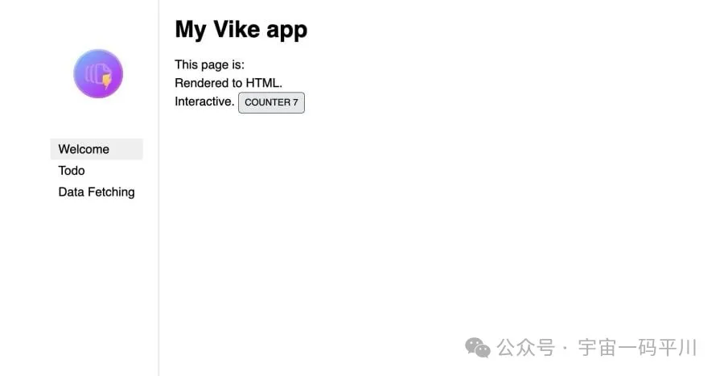
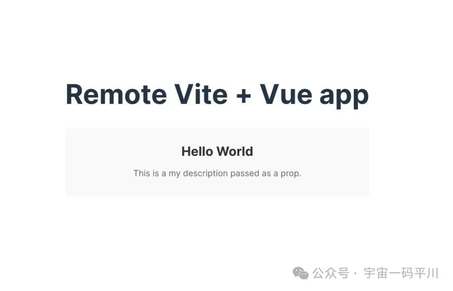
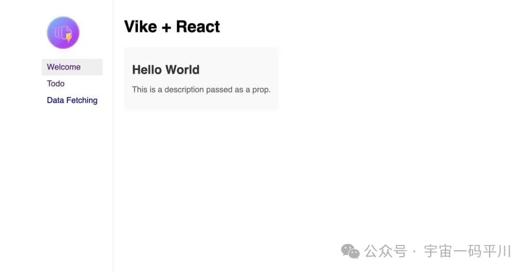

HaoTian · 2024-10-03 21:49:11
Vite 是微前端的绝佳选择，因为它的构建时间短且设置简单。最近，情况得到了进一步的改善，因为您现在可以使用 Vike（以前称为 vite-plugin-ssr）构建 SSR（服务器端渲染）应用程序，同时仍然可以从微前端架构中受益。
在本教程中，我们将探讨如何使用 Vike 和 vite-plugin-federation。我们将对 Vike 进行简短的介绍，介绍它的一些功能，这些功能使构建 SSR 变得有趣，并讨论如何利用它来构建可扩展的微前端。
Vike（不要与其父构建工具 Vite 混淆）是 vite-plugin-ssr 的新名称。Vike 最初是一个插件，旨在为 Vite 添加服务器端渲染 （SSR） 功能，但后来它已经发展成为一个更全面的框架，用于构建完整的 Web 应用程序。
在这样的场景，Vike 利用 Vite 的捆绑和开发服务器来设置一个服务器，以动态呈现应用程序的页面。当用户请求页面时，Vike 会在运行时在服务器上生成 HTML，这使其成为具有频繁更改的动态内容的应用程序的理想选择。
除了作为 SSR 框架之外，Vike 还可以用作静态站点生成器 （SSG），与 SSR 相比，它将在构建时为您的网站预先生成 HTML 和资产文件，以便当用户请求页面时，服务器只需提供这些预先构建的 HTML 文件。
除了 SSR 和 SSG 功能外，Vike 的其他一些主要功能包括：
npm create vike@latest
# OR
yarn create vike
运行此命令将提示您选择首选的 JavaScript 框架，并根据所选框架创建新项目。
Vike 还支持 Bun 运行时，这意味着您可以使用以下命令启动新项目：
bun create vike
Vike 团队开发了一个脚手架工具 Bati，它允许您通过选择首选的 CSS 库（如 Tailwind 或 DaisyUI）、身份验证方法、数据库、数据获取库等来自定义项目设置 - 所有这些都在安装过程中完成。
例如，要使用 React 和 Tailwind 创建新的 Vike 应用程序，您可以运行：
npm create bati -- --react --tailwindcss
此命令将构建所选安装选项所需的文件和目录。接下来，我们需要通过运行来安装所有必需的包：
npm install
最后，从以下位置开始您的应用程序：
npm run dev
您的应用程序现在应该在浏览器中运行，您应该会看到类似于下图的输出：
Vike 不能仅用于构建微前端;它必须与模块联合插件集成，该插件允许您在不同的应用程序之间共享组件和状态。在 Vite 生态系统中，一个流行的选项是 vite-plugin-federation。
要使用 vite-plugin-federation，我们需要设置至少两个项目，其中一个将充当主机，另一个将作为远程项目，我们希望从中访问某些组件或共享应用程序状态。
在我们的例子中，一个 Vike 项目将是主机，而一个独立的 vite+react/vue/svelte 项目将充当远程项目。下图也更好地说明了这一点：
如上图所示，我们将有一个独立的组件（例如，卡片组件），在裸露的 Vite 应用程序中创建，在本例中为 Vite + Vue。然后，我们将使用 vite-plugin-federation 在另一个独立的 Vike-react 应用程序中导入并重用此组件。
让我们编写一些代码来查看实际的实现！
首先，为您的微前端项目创建一个新文件夹并移动到其中：
首先，为您的微前端项目创建一个新文件夹并移动到其中：
mkdir micro-vike && cd micro-vike
接下来，运行以下命令来创建远程 Vite + vue 应用程序，我们将从中导出一个卡片组件，供其他独立应用程序重用：
npm create vite@latest vue-card -- --template vue
要继续，请移动到新的项目目录并运行以下命令，将 vite-plugin-federation安装为 dev 依赖项：
cd vue-card
npm install @originjs/vite-plugin-federation --save-dev
当你在 dev 模式下运行 Vite 应用程序时，它会检查并尝试在默认的 5173 端口中运行它;如果此端口不可用，它将在另一个随机端口中启动应用程序。但是，对于我们的实现，我们需要知道运行远程应用程序的端口，因为我们将订阅它。
因此，我们必须强制我们的应用程序在自定义端口中启动。为此，请打开您的项目 package.json 并更新 dev 脚本以匹配以下脚本：
{
"scripts": {
"dev": "vite --port 5001 --strictPort"
}
}
通过此新更新，我们的应用程序被迫在端口 5001 中运行。
接下来，我们来设计要导出的 card 组件。创建新 Card。vue 系列文件，并将以下代码粘贴到其中：
<template>
<div class="container">
<h1 class="title">{{ title }}</h1>
<p class="description">{{ description }}</p>
</div>
</template>
<script setup>
const props = defineProps({
title: {
type: String,
required: true,
},
description: {
type: String,
required: true,
},
});
</script>
<style scoped>
.container {
padding: 16px;
background-color: #f9f9f9;
border-radius: 8px;
}
.title {
font-size: 24px;
color: #333;
margin-bottom: 8px;
}
.description {
font-size: 16px;
color: #666;
}
</style>
上面的代码定义了一个基本的 Card 组件，该组件具有作用域样式，并且该 card 接受 title 和 description 属性。在继续之前，你可以在你的 Vue 应用程序中导入这个组件来测试并确保一切正常：
<!-- src/App.vue -->
<template>
<div>
<h1>Remote Vite + Vue app</h1>
<Card
title="Hello World"
description="This is a description passed as a prop."
/>
</div>
</template>
<script setup>
import Card from "./components/Card.vue";
</script>
您应该会看到类似于下面的输出。
要使 Card （卡片） 组件远程可用，请打开默认 vite.config.js 文件并使用以下代码更新其内容：
import { defineConfig } from "vite";
import vue from "@vitejs/plugin-vue";
import federation from "@originjs/vite-plugin-federation";
export default defineConfig({
plugins: [
vue(),
federation({
name: "remote_app",
filename: "remoteEntry.js",
exposes: {
"./Card": "./src/components/Card.vue",
},
shared: ["vue"],
}),
],
build: {
modulePreload: false,
target: "esnext",
minify: false,
cssCodeSplit: false,
},
});
在这里，我们定义了一个名为 remote_app 的模块联邦，其他应用程序可以使用它来引用我们的 Vite + Vue 应用程序。此外，文件名：remoteEntry.js的 option 指定生成的主入口文件的名称;此文件包含其他应用程序加载我们公开的组件所需的所有信息。
请务必验证此文件是否是在构建项目后生成的。通常，它应该在 http://localhost:5001/assets/remoteEntry.js 上提供。但是，在极少数情况下，它可以在 http://localhost:5001/dist/assets/remoteEntry.js 上获得。
此外，在上面的配置中，我们使用了 exposes 选项来公开我们的 Card 组件，以便其他应用程序可以使用 remote_app/Card 导入它。此外，因为我们使用的是模块联合，所以我们需要更新构建过程以禁用 modulePreload，从而控制模块的动态加载方式;我们还将 target 设置为 esnext，以确保我们使用模块联合正常工作所需的最新 JavaScript 功能。
最后，通过运行以下命令构建并启动远程应用程序：
npm run build
npm run dev
生成 remoteEntry 需要 build 命令。JS 文件，并且 npm run dev 命令允许通过 localhost 访问它。
现在，让我们深入了解如何创建将利用我们刚刚公开的 Card 组件的主机应用程序。回到您的主项目根目录 micro-vike — 并通过运行以下命令使用 Bati 搭建新的 Vike-react 基架：
npm create bati -- --react host
上面的命令在名为 host 的新目录中设置项目，到目前为止，我们应该有一个类似于下面的结构：
micro-vike/
├── vue-card/
│ └── . . .
└── host/
└── . . .
接下来，通过运行以下命令在主机项目中安装 vite-plugin-federation：
更新 vite.config.js 文件以匹配以下内容：
import react from "@vitejs/plugin-react";
import { defineConfig } from "vite";
import vike from "vike/plugin";
import federation from "@originjs/vite-plugin-federation";
export default defineConfig({
plugins: [
vike(),
react(),
federation({
name: "app",
remotes: {
remoteApp: "http://localhost:5001/dist/assets/remoteEntry.js",
},
shared: ["react", "react-dom"],
}),
],
build: {
modulePreload: false,
target: "esnext",
minify: false,
cssCodeSplit: false,
},
});
在这里，我们进行了与远程应用程序类似的更改，此外，我们还更新了主机应用程序以连接到我们之前定义的 remoteEntry URL。
通过所有这些更改，我们现在可以在 Vike-react 项目中加载我们之前使用 Vue 创建的 Card 组件，如下所示：
// pages/index/+Page.jsx
import React from "react";
import Card from "remoteApp/Card";
export default function Page() {
return (
<>
<h1>Vike + React</h1>
<Card
title="Hello World"
description="This is a description passed as a prop."
/>
</>
);
}
使用以下命令启动应用程序：
npm run dev
当我们运行 Vike 应用程序时，您应该会看到类似于下面的输出：
就是这样！我们已经成功地将一个独立的 Vite + vue 项目的 Vue 组件加载到另一个 Vike-react 项目中！
值得一提的是，您还可以集成 Nx 和 Turborepo 等 Monorepo 框架，以将您的微前端整合到一个存储库中。这样，您可以进一步简化代码共享、依赖项管理和配置，并减少维护工作。
但是，这是否是正确的选择取决于您的项目要求。如果您有兴趣开始使用 Nx，可以参考此采用指南：https://blog.logrocket.com/nx-adoption-guide。